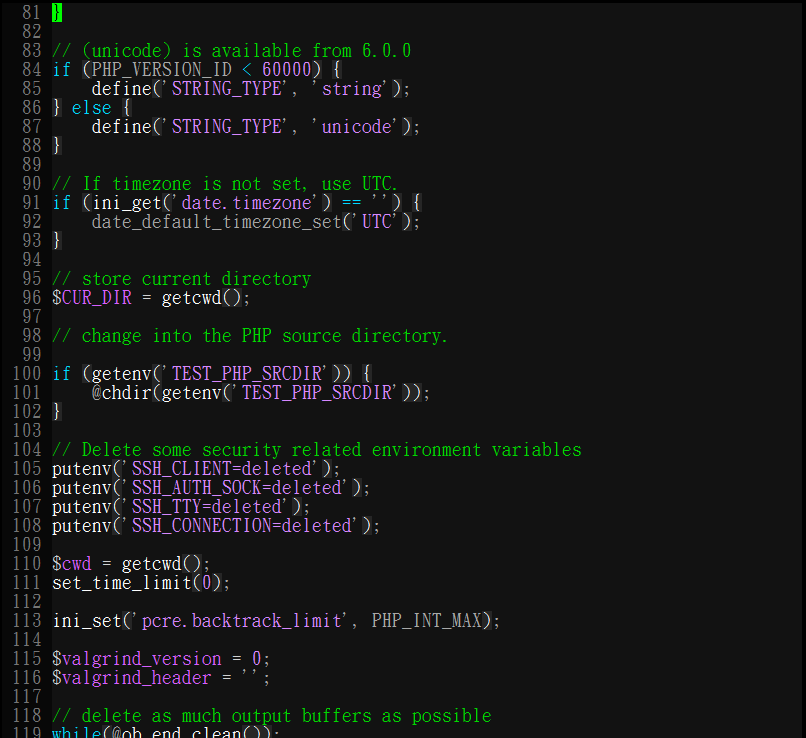
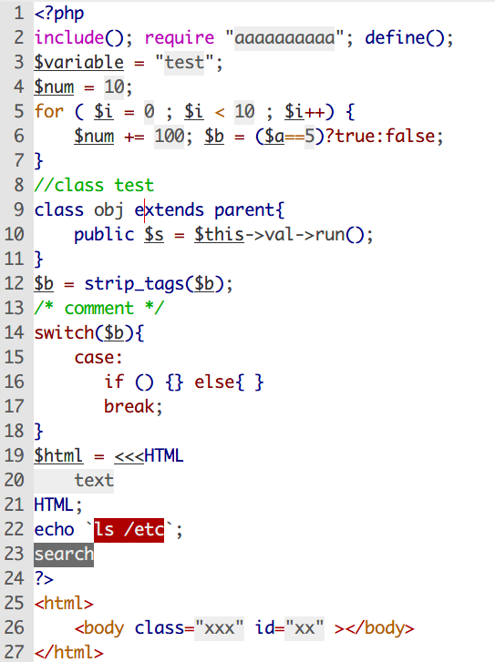

預設的 vim 只有 16 種顏色，但是改一改設定檔之後，就能夠用 256 種顏色，使用 256 色前，必需先編輯 ~/.vimrc 的檔案，加入這句 「set t_Co=256」。大小寫要一模一樣，否則就沒有作用了。
我的 vim 配色 (黑)
vim 配色程式碼
這段程式碼可以直接寫進 ~/.vimrc ，或是使用建立檔案在 ~/.vim/colors/ 的路徑下，這樣 vim 也會自動載入這個檔案，最後在 ~/vimrc 中加入樣式的名稱 「colorscheme mystyle」。
我的 vim 配色 (白)
黑底白字的配色表看久了，眼睛會開始覺得糢糊，所以後來我又改了一個白底黑字的版本，並且把 c++ , php ,javascript 的 syntax 配色都加上去，用了這個配色之後，字體變清楚了，眼睛也比較不累，又可以長時間加班囉......
這段程式碼可以直接寫進 ~/.vimrc ，或是使用建立檔案在 ~/.vim/colors/ 的路徑下，這樣 vim 也會自動載入這個檔案，最後在 ~/vimrc 中加入樣式的名稱 「colorscheme mystyle_white」。
vim Syntax
除了有配色表之外，還可以針對不同的語言給予不同的 Syntax ， 一般來說 c , c++ , php , shell 等等都已經內建在 vim7 的 package 裡了，所以不用煩腦 syntax 問題。
但是像我常常會用 vim 編輯 javascript ， 面對沒有 Syntax 的字體，真的是非常辛苦，而增加 javascript syntax 的方式也不會太難，第一步是先下載 javascript syntax http://www.vim.org/scripts/script.php?script_id=1840 ，再將下載回來的檔案改名為 javascript.vim ，並放置在目錄 ~/.vim/syntax/javascrip.vim，最後再更改 「.vimrc」 ，加入語法「 au BufRead,BufNewFile *.sjs set filetype=javascript」。
在製作 vim syntax 配色時，需要一邊修改一邊預覽，這時可以使用 「:syn off | syn on」 這句語法，來重新載入修改後的 syntax 配色表。
Kindle E-ink 配色
背景色 #F1E7D0
其他相關
vim 顏色對照表
其他不錯的配色表